Exterior & Wood
Elevated Deck Staining & Restoration
Weathered deck boards restored with a warmer protective finish
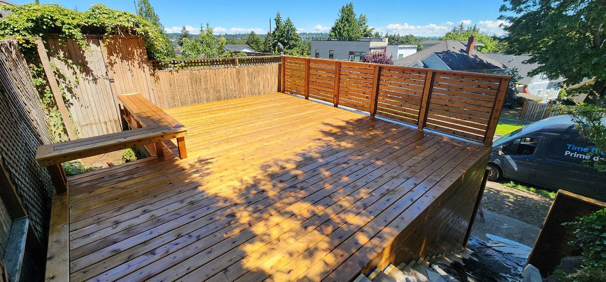
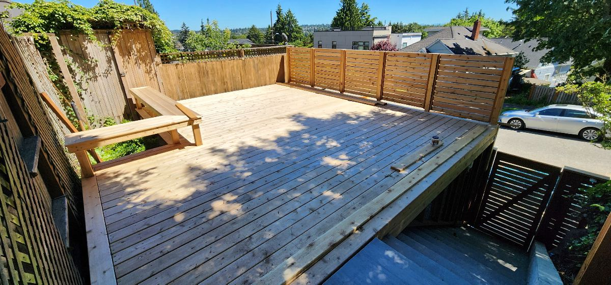
Exterior & wood
Decks, fences, exterior walls, doors and exposed wood documented before and after with the preparation needed for Northwest conditions.
Weathered deck boards restored with a warmer protective finish


Faded exterior wood renewed with richer, more even color
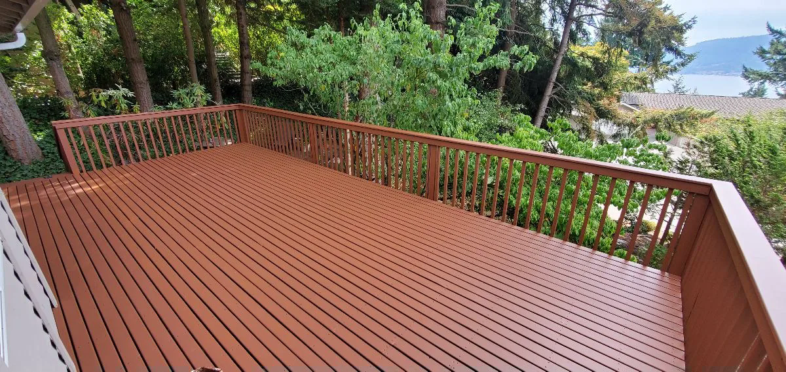
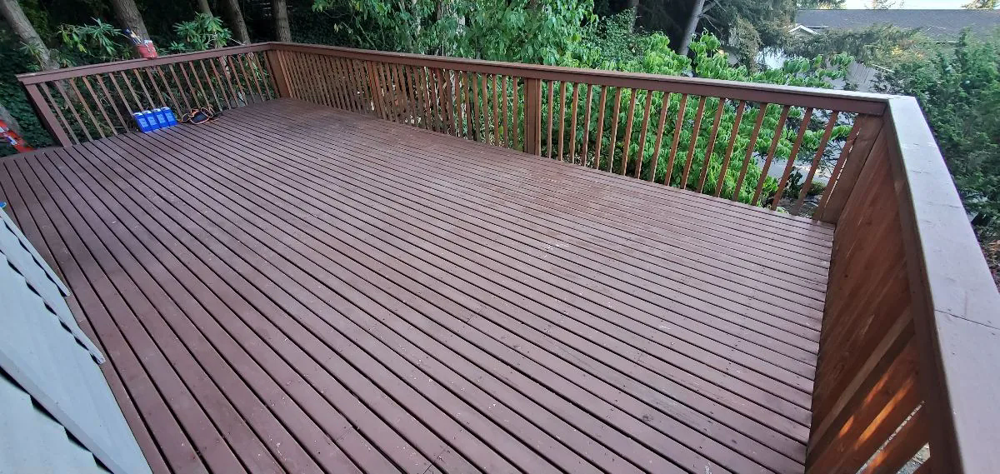
Weathered veneer doors revived
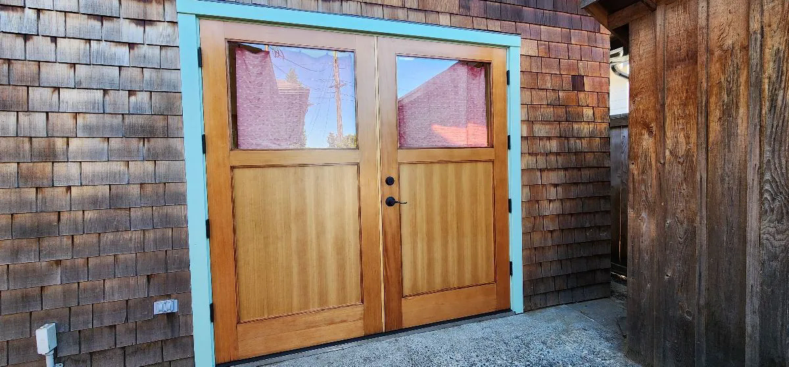
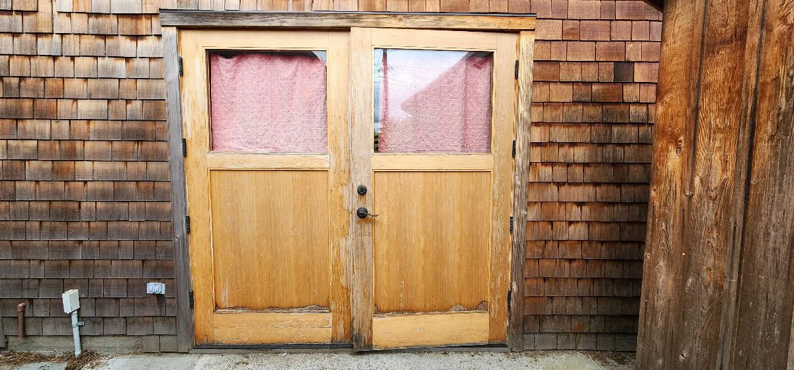
Complete exterior color transformation across siding, trim and garage doors
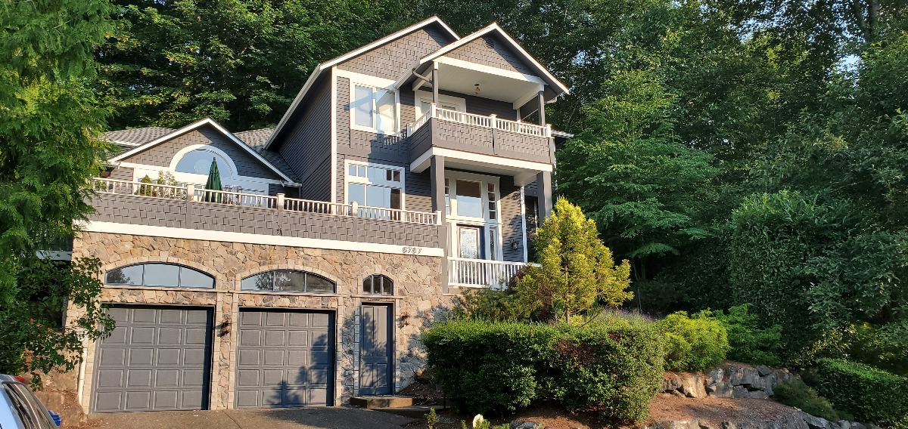
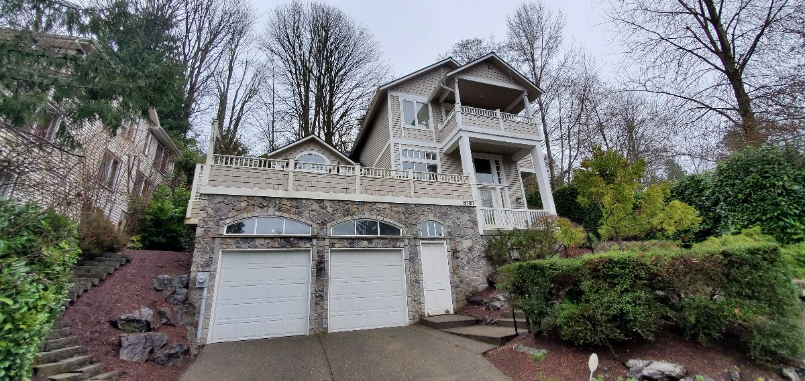
Full exterior repaint with a deeper contemporary finish
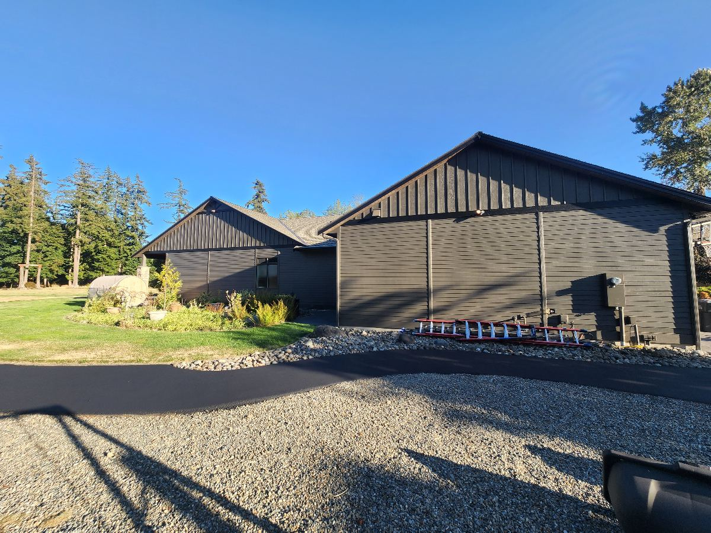
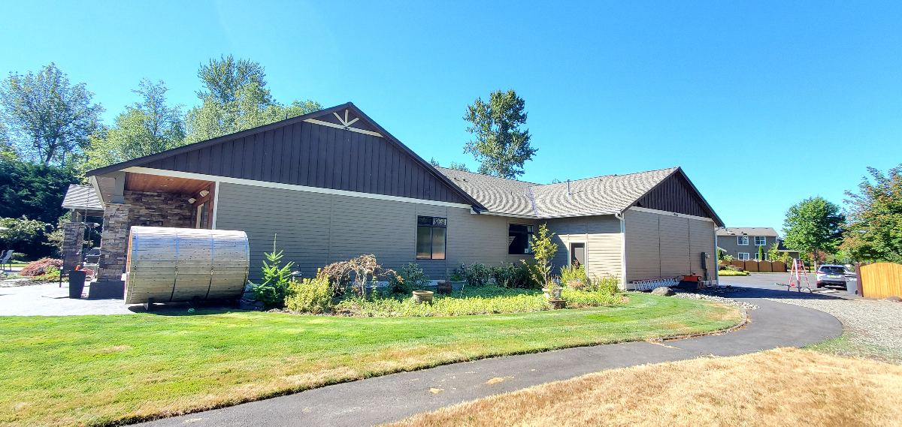
Fence transformation and protection
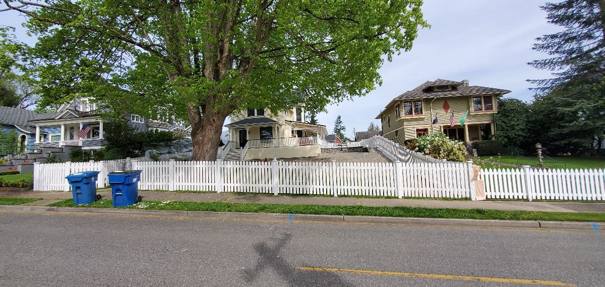
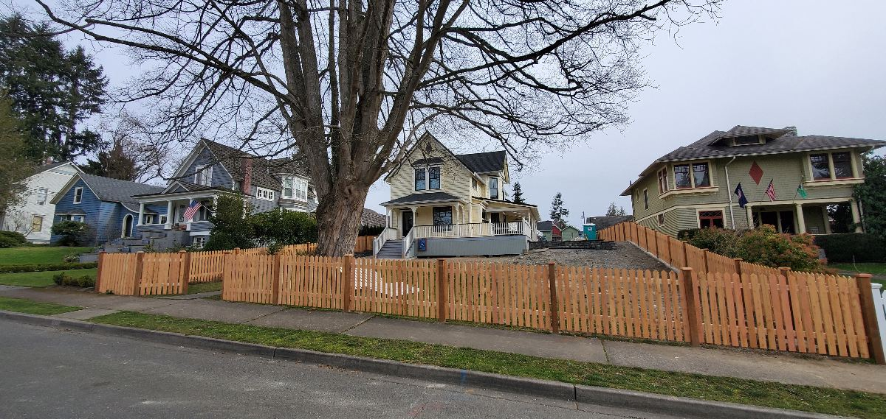
Wood ceiling stain transformation
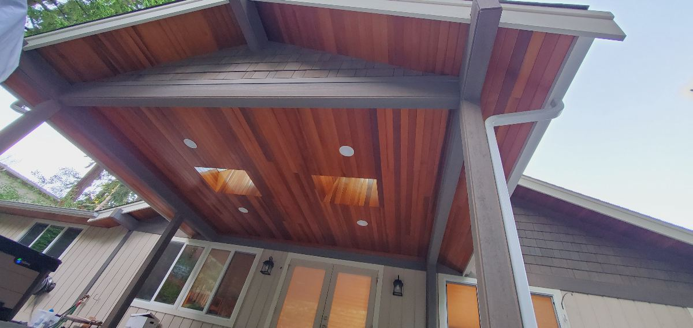
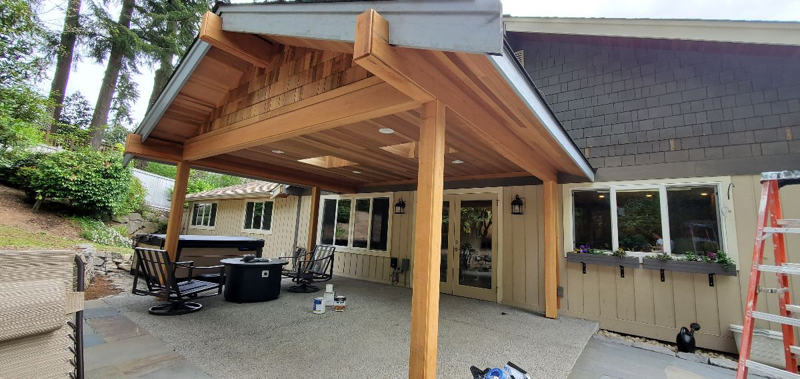
See the preparation behind the finish.
View the process gallery